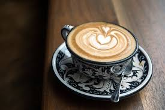

Cafe Latte

A café latte, or “latte” for short, is an espresso based drink with steamed milk and micro-foam added to the coffee.
Cappuccino
A cappuccino has more foam and chocolate placed on top of the drink.
Mocha

A mocha is a mix between a cappuccino and a hot chocolate.